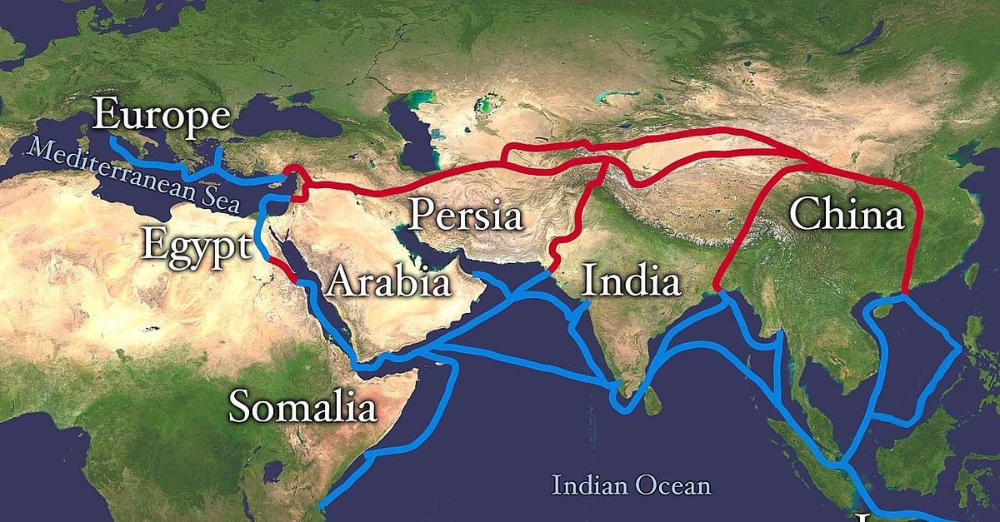

13 Economic Geography: Part A
Do you think that geography is important in influencing economic and political institutions, and ultimately poverty?
13.0.1 Geography matters
International trade is important for growth, and ocean harbors and a lack of geographical barriers foster trade with foreign markets.
- Landlocked and mountainous regions are predicted to be poor.
- Also, geography is said to have determined institutions, which may play a role in development.
- Geography determined whether Westerners established property rights and long-term investment in colonies, which in turn influenced economic growth.
- Geography determined whether Westerners died from malaria and other diseases. With high mortality rates, they established practices and institutions based on quick plunder of colonies’ resources, rather than institutions favoring long-term economic growth.
- Plunder led to property confiscation and corruption, even after political independence from Westerners.
- Geography also determined whether local economies were better for plantation agriculture, which resulted in income inequalities and political inequalities. Under this system, equal property rights were not established, hindering long-term economic growth.
13.0.2 Geography and transportation
Geography and economy are closely tied together because transport makes trade with widespread areas possible. This is because geographical features include mountains, deserts, and water, which directly impact the movement of people and thus the movement of trade. The integration of the world economy has increased rapidly in recent decades, with world trade growing more than twice as fast as world GDP since 1980. The two main reasons behind it are
Trade liberalization
Decline in trade costs (including transport and communication costs)
13.0.3 Globalization and international trade
In a global economy, no nation is self-sufficient, which is associated with specific flows of goods, people, and information. International trade, or long-distance trade, has taken place for centuries, with some ancient trade routes predating history. Trade is an important part of economic and cultural history, as ancient trade routes such as the Silk Road can testify.
13.0.4 The Silk Road
The Silk Road was the most enduring trade route in human history, being used for about 1,500 years. Its name is taken from the prized Chinese textile that flowed from Asia to the Middle East and Europe, although many other commodities were traded along the route. The Silk Road consisted of a succession of trails followed by caravans through Central Asia, about 6,400 km in length.

By the mid-19th century, trade was taking an increasingly active role in the economic life of nations and regions, and after the mid-20th century, trade became an active tool of economic globalization.
The Silk Road was a vast trade network connecting Eurasia and North Africa via land and sea routes.
The Silk Road earned its name from Chinese silk, a highly valued commodity that merchants transported along these trade networks.
Advances in technology and increased political stability caused an increase in trade. The opening of more trade routes caused travelers to exchange many things: animals, spices, ideas, and diseases.

13.0.4.1 Travel on the Silk Road
Traders had to find ways to move their goods efficiently. To travel overland, the camel was favored mode of transportation.
Nomadic peoples in central Asia started domesticating camels as early as the second millennium BCE. For example, the Han Chinese used camels captured from the Xiongnu to carry military supplies.
Camels could withstand the harsh desert conditions through central Asia and were also able to carry up to 500 pounds at a time! Pack animals—especially camels—made the transportation of goods over land on the Silk Road viable.
13.0.4.2 The effects of exchange
One obvious effect of trade along the Silk Road was more goods were available in more places. Silk, owing to its soft texture and appealing shimmer, became so hotly desired that it was used as currency in central Asia. However, the process of raising silkworms and creating fabric from their cocoons remained a Chinese secret through the 6th century C.E. The fact that China remained the only source of silk meant that trade goods continued to travel across Asia. This involved many people and locations in the Silk Road trade networks.
13.0.4.3 Chinese silk in Rome
So now we have a sense of the economic and political conditions that enabled Chinese silk to make its way to Roman markets. Both the Han Chinese and Roman Empires controlled vast territories and kept them relatively peaceful. The Han conquered their way into central Asia. From there, nomadic traders carried goods farther west or south. Trade brought new faiths, new ideas, and new goods to places they had not previously been.
13.0.5 Living in cities
Roughly two thirds of the world’s population is projected to live in cities by the year 2050, with the urban population increasing by around 2.5 billion people, and nearly 90 percent of this increase concentrated in Asia and Africa.
How do people and economic activities sort across geographic space in response?
13.0.6 The China shock
With its rapid economic growth following its market-orientated reforms of 1978, China has emerged as a major source of import competition for producers of manufactured goods in developed countries such as the United States.
In 1991, low-income countries accounted for just 9 percent of U.S. manufacturing imports. In contrast, by 2000, the low-income country share of U.S. imports reached 15 percent and climbed to 28 percent by 2007, with China accounting for 89 percent of this growth.
This rise in import penetration is particularly rapid following China’s admission to the World Trade Organization (WTO) in 2001 and coincides with a marked decline in U.S. manufacturing